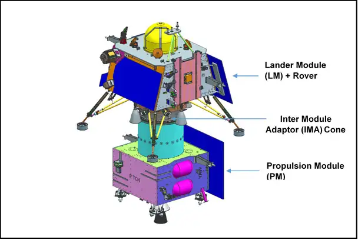

Gallery



India’s Remarkable Journey to the Moon
Chandrayaan, meaning "Mooncraft" in Sanskrit, is a series of lunar exploration missions developed by the Indian Space Research Organisation (ISRO). These missions aim to explore the Moon’s surface, atmosphere, and minerals.
The Chandrayaan program marked a significant milestone in India's space journey. From discovering water molecules on the Moon with Chandrayaan-1, to making a historic soft landing near the lunar south pole with Chandrayaan-3, ISRO has positioned India as a key player in space exploration.
India's first lunar mission. It discovered water molecules on the Moon and proved India's capability in deep space exploration.
Second lunar mission with an orbiter, lander (Vikram), and rover (Pragyan). The orbiter is still functional and providing valuable data.
India made history by successfully soft-landing near the Moon’s south pole, becoming the first country to do so.
India's first lunar mission. It carried 11 scientific instruments and confirmed the presence of water molecules on the Moon. It marked India's entry into deep space exploration.
This mission included an orbiter, lander (Vikram), and rover (Pragyan). Though the lander crash-landed, the orbiter remains functional and continues to provide valuable lunar data.
ISRO successfully soft-landed near the Moon’s south pole, making India the first nation to do so. The Vikram lander and Pragyan rover operated successfully, gathering critical surface data.
Former ISRO Chairman, played a key role during Chandrayaan-2 mission.
ISRO Chairman, led the successful Chandrayaan-3 mission.
Project Director of Chandrayaan-2, first woman in this role at ISRO.
Mission Director of Chandrayaan-2, known as “Rocket Woman of India.”
Chandrayaan-1 launched — India’s first lunar mission, discovered water molecules on the Moon.
Chandrayaan-2 orbiter is still functioning and sending valuable data from lunar orbit.
Chandrayaan-3 achieved a historic soft landing near the Moon's south pole — a global first!
Chandrayaan-3 cost only ₹615 crores — one of the most cost-effective moon missions ever.
ISRO's Chandrayaan missions earned praise from NASA, ESA, and the global scientific community.
Chandrayaan-3 lander touched down just 350 meters from the intended target site.
"India is on the Moon! Chandrayaan-3’s success is not just our victory, but a moment of pride for every Indian."
The Chandrayaan missions are not just scientific endeavors — they are symbols of India’s ambition, dedication, and brilliance in space exploration. From discovering water on the Moon to landing near the south pole, ISRO has carved its name in history. Let us celebrate these achievements and continue to dream beyond the stars.